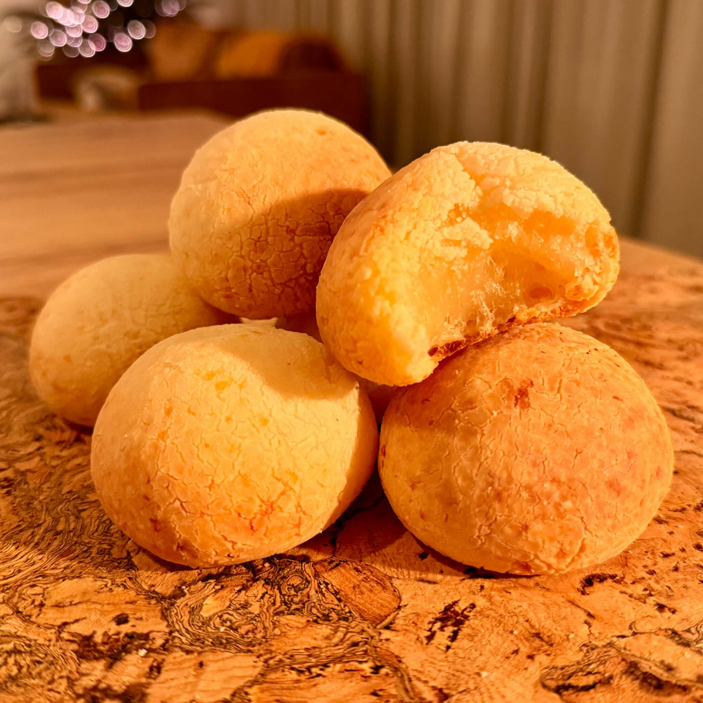

ingrediënten
- 1 kopje (250 ml) melk
- ½ kopje (125 ml) plantaardige olie
- ½ eetlepel zout
- 500 g Braziliaanse polvilho doce (tapiocazetmeel)
- 3 eieren
- 300 g geraspte kaas
voorbereiding
- Doe het tapiocazetmeel en het zout in een kom.
- Voeg de melk en de olie in een pan toe en verwarm tot het kookt.
- Wanneer het mengsel begint te koken, giet je het in de kom over het tapiocazetmeel en roer je goed met een siliconen spatel totdat de vloeistof door het tapiocazetmeel is opgenomen.
- Voeg de eieren toe en mix tot je een homogene consistentie verkrijgt.
- Voeg de geraspte kaas toe en meng deze goed door het deeg.
- Rol balletjes van ongeveer 60 g en plaats ze op een vooraf ingevette bakplaat, met een afstand van minimaal 2 cm tussen de balletjes.
- Bak in een voorverwarmde oven op 210ºC gedurende ongeveer 20 minuten, totdat ze goud van kleur zijn.
observaties
Invriezen: je kunt de kaasbroodbolletjes direct na het rollen invriezen (stap 6). Eenmaal ingevroren kunnen ze ongeveer 35 minuten in een op 200ºC voorverwarmde oven worden gebakken.
Hoeveelheid kaas: het is mogelijk om de hoeveelheid en het type kaas te variëren, idealiter tussen 100 g en 400 g.
over de ingrediënten
Melk
De melk die voor dit recept wordt gebruikt, kan vol of halfvol, vers of houdbaar zijn.
Plantaardige olie
Ik raad het gebruik van zonnebloemolie of olijfolie aan. Andere plantaardige oliën kunnen ook worden gebruikt, maar dit heeft invloed op de uiteindelijke smaak.
Braziliaanse polvilho doce (tapiocazetmeel)
In Nederland kan het lastig zijn om Braziliaanse polvilho doce te vinden, en dit ingrediënt is doorgaans alleen te vinden in specifieke Braziliaanse productwinkels (bijvoorbeeld Gegranuleerde Manioc Starch verkocht bij Finalmente Brasil). In de meeste Aziatische supermarkten kun je echter producten vinden die gelijkwaardig zijn aan Braziliaanse polvilho doce, verkocht als tapiocazetmeel of tapiocameel. Een voorbeeld is het Tapiocazetmeel dat verkocht wordt bij Amazing Oriental.
Geraspte kaas
Voor een ideaal recept voor kaasbrood worden twee soorten kaas gebruikt: een jongere en een meer gerijpte (bij voorkeur drogere). Van de kaassoorten die gemakkelijk in de Nederlandse supermarkten te vinden zijn, raad ik aan om 200 g jong belegen kaas en 100 g grana padano te gebruiken.
referenties
- Kaasbrood recept van Vovó Palmirinha (Portugees)